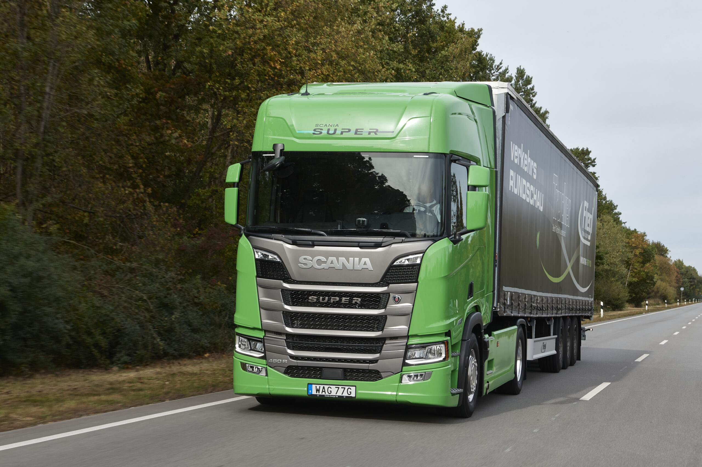

Introdução
Nosso site tem como objetivo oferecer informações detalhadas e confiáveis sobre todas as etapas do processo de produção de roupas, desde o cultivo do algodão até a chegada das peças ao consumidor final nas lojas. Buscamos apresentar de forma educativa e acessível como a matéria-prima é transformada, por meio de processos industriais e criativos, em produtos prontos para o mercado da moda
Processo de criação
A criação de roupas envolve uma cadeia produtiva complexa que se inicia com o cultivo do algodão, uma das principais matérias-primas têxteis. Após a colheita, o algodão é processado para a extração das fibras, que são transformadas em fios por meio de processos de fiação. Esses fios seguem para a etapa de tecelagem ou malharia, onde são convertidos em tecidos. O tecido, então, passa por processos de beneficiamento, como tingimento e acabamento, para garantir qualidade, cor e textura adequadas. Em seguida, entra em fase de modelagem e confecção, onde são desenhadas as peças, cortados os moldes e realizadas as costuras. Finalizadas, as roupas passam por controle de qualidade e seguem para distribuição. Por fim, chegam às lojas, físicas ou virtuais, onde são comercializadas ao consumidor final, concluindo assim um ciclo que une agricultura, indústria e comércio em um único produto.
Exportação de roupas do campo para a cidade
Primeiro, as roupas são produzidas em áreas rurais ou em fábricas próximas ao campo. Depois, elas passam por processos de transporte, que podem incluir caminhões, navios ou aviões, dependendo do destino final. Antes de chegar às lojas ou aos consumidores na cidade, as roupas também passam por etapas de inspeção, embalagem e distribuição. Tudo isso garante que as roupas cheguem em boas condições e prontas para serem usadas pelos moradores urbanos
Como são vendidas
Muitas vezes, elas são comercializadas em feiras rurais, mercados locais ou diretamente por produtores e artesãos. Além disso, podem ser vendidas em lojas físicas nas cidades, em lojas de roupas especializadas ou até mesmo por meio de vendas online, através de sites e redes sociais. Essa variedade de canais ajuda a levar as roupas do campo até os consumidores urbanos, oferecendo opções acessíveis e muitas vezes com um toque artesanal ou regional.
Curiosidade
Algumas marcas de roupas famosas que utilizam o campo como meio de produção incluem marcas que valorizam a moda sustentável e o uso de matérias-primas provenientes de áreas rurais. Um exemplo é a Patagonia, que investe em práticas sustentáveis e apoia comunidades agrícolas. Outra marca é a Veja, que utiliza algodão orgânico de comunidades rurais brasileiras. Além disso, marcas como a Stella McCartney também promovem o uso de materiais sustentáveis provenientes do campo.
Referência
https://www.comprerural.com/agro-deve-ser-a-forca-motriz-da-economia-brasileira-em-2023/ https://chatgpt.com.br/